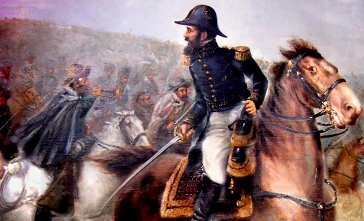

Tras un fin de semana largo marcado por las festividades del 25 de mayo, muchos se preguntan cuál será el próximo feriado que garantice un día más de descanso. En junio, el Paso a la Inmortalidad del General Martín Miguel de Güemes cae el miércoles 17 de junio, pero con el fin de generar un nuevo finde largo, el Gobierno nacional decidió trasladarlo al lunes 15.
Si bien la efeméride original corresponde a la fecha en que el prócer salteño murió en 1821, se trata de un feriado trasladable, y según la normativa actual, se permite su cambio de fecha. Como resultado, el fin de semana largo irá desde el sábado 13 de junio al lunes 15, favoreciendo tres días consecutivos sin actividad laboral.
El 17 de junio, fecha en que murió el general Martín Miguel de Güemes en 1821, fue declarado el Día Nacional de la Libertad Latinoamericana por el Congreso de la Nación mediante la Ley 25.172 de 1999. Luego, la Ley 27.258 de 2016 incorporó dicha conmemoración al calendario de feriados nacionales.

Martín Miguel Juan de Mata Güemes fue un militar y héroe de la liberación nacional. Es reconocido por su destacada participación junto a los generales José de San Martín y Manuel Belgrano para la independencia argentina. Fue el único General argentino muerto en accionar de guerra en la histórica epopeya de la emancipación del continente americano.